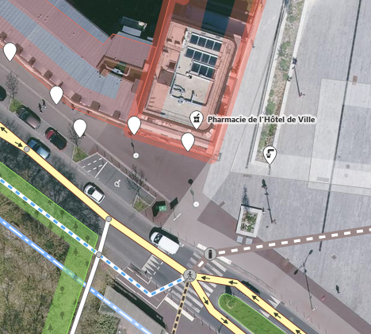

Première carte de la ville
1 Objectif
Faire une première extraction des données OSM pour établir une carte. cela permet d’appréhender OSM et Qgis.
2 1e saisie pour comprendre
2.1 Interface JOSM
{kind=link}
Attention, clic droit pour se déplacer
2.2 Primitives géométriques : noeud et chemin
Ouvrir une page vierge sous JOSM et créer un triangle avec 3 noeuds en utilisant les modes :
- a pour ajout
- s pour sélection
- w pour write
Faire le triangle, ajouter un point, le déformer.
2.3 La relation
Il existe une 3e primitive, plus difficile à utiliser, la relation. Elle est utilisée pour construire les itinéraires de bus par exemple. On verra, pour les bureaux de vote, qu’elle sert à lier le bureau et sa zone.
2.4 Tag = clé + valeur
https://taginfo.openstreetmap.org/
on utilise directement l’éditeur intégré id sur osm.org trouver le tag directement à partir de l’éditeur.
exercice 1 : faire une saisie sur un point connu
exercice 2 : faire une saisie sur un point pmr sur Bondy, attention à la concordance image aérienne et carte terrain.

2.5 outil de qualité
Voir les saisies pmr effectuées par les étudiants avec overpass turbo
également dans osmose
Mais le mieux reste :
3 Extractions diverses OSM
3.2 Overpass pour extraire
Il existe beaucoup d’outils, y compris intégrés dans Qgis.
Utiliser l’assistant et extraire rues et bâtiments avec le caractère joker.
comment limiter l’extraction à Bondy
quel est ce caractère ?
attention au et
3.3 Autres extractions
les bureaux de vote (boundary=political)
et les limites de la commune (admin_level=8)
4 Autres données
On va également utiliser le cadastre en opendata sur data.gouv, le télécharger pour la ville (code INSEE 93010)
Enfin en fond de carte, on affichera OSM Positron obtenu à partir du plugin
5 CARTE 1 : les rues et les bâtiments OSM sous QGIS
Avant de faire la carte, quizz !
5.1 Savoir-faire QGIS
mettre un favori dans l’explorateur sur le répertoire Téléchargement
intégrer une couche dans Qgis
étiquetage des rues sous Qgis

style en polygone inversé et remplissage dégradé suivant la forme (ou plugin mask)
mise en page qgis (3 boutons)
5.2 Consignes
5.2.1 Les couches

Le cadastre sert de fond afin de faire ressortir les axes, du coup, pas de symbole pour les rues uniquement des étiquettes. Pas d’utilisation de la donnée ponctuelle Fond positron (plugin Qgis)
5.2.2 Les contours de la commune
Tag = admin_level=8 in Bondy
style en polygone inversé et remplissage dégradé suivant la forme (ou plugin mask)
5.2.3 Les étiquettes des rues
une police condensée / étroite et une position incurvée sur la ligne
5.2.4 Mise en page
classique : titre / échelle / crédits